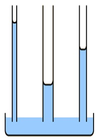
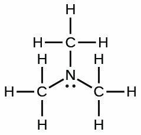

1) How much energy is required to vaporize 45.6 g of acetone (C3H6O) (58.08 g/mol) at its boiling point, if its ΔHvap is 29.10 kJ/mol?
A) 0.0270 kJ
B) 0.785 kJ
C) 22.8 kJ*
D) 91.0 kJ
45.6 g x 1mol/58.08g x 29.10 kJ/mol = 22.8 kJ
2) What is the strongest type of intermolecular force present in CH2O?
A) Dipole-dipole forces*
B) Ion-dipole forces
C) Hydrogen bonding
D) London dispersion forces
E) None of the above.
The strongest type of intermolecular force present in CH2O is dipole-dipole forces, because CH2O is polar but cannot hydrogen bond.
3) Choose the substance with the highest vapor pressure at a given temperature.
A) KF
B) OF2
C) CH4*
D) NH3
The chemical with the lowest intermolecular forces will have the highest vapor pressure. Since CH4 only has London dispersion forces, it will have the lowest intermolecular forces, and the highest vapor pressure. KF is an ionic compound with ionic bonds. OF2 is a polar molecule (dipole-dipole forces). NH3 can hydrogen bond.
4) In which of the following figures is the cohesive force greater than the cohesive force?
A) The image labeled A
B) The image labeled B
C) The image labeled C*
D) None of the above.
When cohesive force is greater than the adhesive force the fluid will have a weaker attraction to the side of the tube as it does other molecules in the fluid, so it will cause the meniscus to curve downwards on the side, thus image C is the answer.
5) Which of the following 3 alkane isomers would you expect to have the highest boiling point?
A) Since they are isomers, they will have the same boiling point.
B) Pentane*
C) Isopentane
D) Neopentane
Pentane is the least branched alkane, so it will have the most surface area interacting for London dispersion forces. Thus it will have the highest intermolecular forces and the highest boiling point.
6) How much energy is required to heat 37.5 g H2O from a liquid at 61.8°C to a gas at 120°C? ΔHvap = 40.7 kJ/mol Cliquid = 4.184 \( \frac{J}{g°C} \) Cgas = 2.01 \( \frac{J}{g°C} \) Csolid = 2.09 \( \frac{J}{g°C} \) Tmelting = 0°C Tboiling = 100°C
A) 1530 kJ
B) 103 kJ
C) 92.2 kJ*
D) 7590 kJ
To calculate the energy required to heat water from a liquid at 61.8°C to a gas at 120°C, we need to consider the following steps:
Heating the liquid water from its initial temperature to its boiling point.
Vaporizing the liquid water at its boiling point to gas.
Heating the water vapor from it's boiling point to 120°C.
Step 1: Heating the liquid water First, we calculate the energy required to heat the liquid water from 61.8°C to its boiling point at 100°C.
q1 = m x Cliquid x ΔT1
where: q1 = energy required (in joules) m = mass of water (in grams) Cliquid = specific heat capacity of liquid water (in J/g-°C) ΔT1 = change in temperature (final temperature - initial temperature) Cgas = specific heat capacity of liquid water (in J/g-°C)
Given: m = 37.5 g Cliquid = 4.184 J/g-°C ΔT1 = 100°C - 61.8°C = 38.2°C
q1 = (37.5 g) x (4.184 J/g-°C) x (38.2°C) q1 ≈ 5990 J x \( \frac{1 kJ}{1000 J} \) = 5.99 kJ
Step 2: Vaporizing the liquid water Next, we calculate the energy required to vaporize the liquid water at its boiling point.
q2 = n x ΔHvap
where: q2 = energy required (in joules) n = number of moles of water ΔHvap = enthalpy of vaporization (in J/mol)
To calculate the number of moles of water, we use the molar mass of water (H2O), which is approximately 18.02 g/mol.
mol = 37.5 x \( \frac{1 mol H_2O}{18.02 g H_2O} \) ≈ 2.08 mol
Given: ΔHvap = 40.7 kJ/mol
q2 = (2.08 mol) * (40.7 kJ/mol) ≈ 84.7 kJ
Step 3: Heating the water vapor, we calculate the energy required to heat the water vapor from 100°C to 120°C.
q3 = m x Cliquid x ΔT2
where: q3 = energy required (in J) m = mass of water (in grams) Cgas = specific heat capacity of liquid water (in J/g-°C) ΔT1 = change in temperature (final temperature - initial temperature)
Given: m = 37.5 g Cliquid = 2.01 J/g-°C ΔT1 = 120°C - 100°C = 20.0°C
q3 = (37.5 g) x (2.01 J/g-°C) x (20.0°C) q3 ≈ 1510 J x \( \frac{1 kJ}{1000 J} \) = 1.51 kJ
Total energy required: The total energy required is the sum of q1, q2 and q3.
Total energy = q1 + q2 + q3 ≈ 5.99 kJ + 84.7 kJ + 1.51 kJ
Total energy ≈ 92.2 kJ
7) Determine the normal boiling point (at 760 mm Hg) of a substance whose vapor pressure is 46.1 mm Hg at 35.8°C and has a ΔHvap of 24.0 kJ/mol.
A) 441 K*
B) 37.1 K
C) 310. K
D) 238 K
To determine the normal boiling point of a substance, we need to find the temperature at which its vapor pressure is equal to the atmospheric pressure at 760 mm Hg.
Given: T1: 35.8°C T2: ? P1: 46.1 mm Hg P2 = 760 mm Hg (normal pressure) ΔHvap = 24.0 kJ/mol R = gas constant (8.3145 J/mol·K)
To calculate the normal boiling point, we can use the Clausius-Clapeyron equation:
ln(P2/P1) = -(ΔHvap/R) * (1/T2 - 1/T1)
Converting the given values to K and J: T1: 35.8°C + 273.15 = 309 K ΔHvap = 24.0 kJ/mol = 24.0 × 1000J/1 kJ = 2.40x104 J/mol
Simplifying: ln(16.5) = -2890 K * (1/T2 - 1/309 K)
Now, let's solve for T2: -0.000971 K = (1/T2 - 1/309 K) -0.000971 1/K = 1/T2 - 1/309 K -0.000971 1/K + 1/309 1/K = 1/T2 0.00227 1/K = 1/T2
Taking the inverse of both sides: 441 K = T2
8) Identify the place which has the lowest boiling point of water.
A) Mt. Everest, 29,035 feet*
B) Death Valley, 282 feet below sea level
C) New Orleans, sea level
D) Denver, Colorado, 5280 feet
The lowest boiling point will be where the atmospheric pressure is the lowest. Atmospheric pressure will be the lowest at the highest elevation.
9) Which of the following increases the rate of vaporization?
A) Decreasing the surface area
B) Decreasing temperature
C) Strong intermolecular bonds
D) Weak intermolecular bonds*
Increasing the surface area, weak intermolecular bonds, or increasing the temperature will lead to an increased rate of vaporization.
10) What is the main reason why the boiling point of HF is much higher than that of HCl?
A) HCl can hydrogen bond whereas HF cannot
B) HF has stronger London dispersion forces than HCl
C) HF can hydrogen bond whereas HCl cannot*
D) HF has dipole-dipole forces whereas HCl does not
HF has a hydrogen attached to a N, O, or F, so it can hydrogen bond whereas HCl does not, so it cannot hydrogen bone. Hydrogen bonding gives HF a higher boiling point.
11) Which of the following statements is TRUE?
A) Intermolecular forces are generally stronger than bonding forces
B) Energy is given off when the attraction between two molecules is broken
C) Increasing the pressure on a solid usually causes it to become a liquid
D) The potential energy of two distant oppositely charged molecules decrease as they get closer to one another*
It is true that the potential energy of molecules decrease as they get closer to one another. Ionic and covalent bonds are stronger than intermolecular forces. Energy is required to break bonds, energy is not released when bonds are broken. Generally speaking, increasing pressure will cause a chemical to go from gas to liquid to solid (the exception being chemicals where the solid has a lower density than the liquid). Increasing temperature will cause a chemical to go from gas to liquid to solid.
12) Which of the following has the lowest viscosity?
A) *
B)
C)
D)
will have the lowest viscosity, because it has the fewest iodines, which means it has the lowest molar mass, and the lowest London dispersion forces.
13) Choose the substance with the lowest ΔHvap.
A) OF2
B) CH4*
C) KF
D) NH3
KF is an ionic compound. Ionic bonds are stronger than intermolecular bonds, so it will have the highest ΔHvap. NH3 can hydrogen bond, thus would have the second highest ΔHvap. OF2 is polar (dipole-dipole forces), thus would have the third highest ΔHvap. CH4 is non-polar (only London dispersion forces), thus would have the lowest ΔHvap.
14) If three capillary tubes are dipped into water, which of the following images would most accurately represent the relative heights of the water level in the three capillary tubes?
A)
B)
C)
D) *
shows the thinnest tube with the highest height of liquid, and the widest tube with the lowest height of liquid, so it is the correct answer.
15) Which of the following would you expect to have the highest surface tension?
A) CH3CH2CH2CH2CH2CH3
B) CH3CH2CH2CH2CH2CH2CH3
C) CH3CH2CH2CH2CH2CH2CH2CH3*
D) CH3CH2CH2CH2CH3
The longest carbon chain will have the largest London dispersion forces, thus the highest surface tension.
16) Place the following substances in order of decreasing boiling point. H2O N2 CO
A) CO > N2 > H2O
B) CO > H2O > N2
C) N2 > CO > H2O
D) H2O > CO > N2*
N2 only has London dispersion forces, so it has the lowest boiling point. CO is polar, so it has dipole-dipole forces H2O can hydrogen bond, so it will have the highest boiling point.
17) Using the phase diagram below, what phase transition would occur if H2O was cooled from 44°C to -57°C at 0.005 atm?
A) Deposition*
B) Condensation
C) Sublimation
D) Freezing
At 0.005 atm and 44°C the water would be a gas, but at 0.005 atm and -57°C it would be a solid. So the phase transition is deposition.
18) Which substance has the lowest intermolecular forces?
A) H2*
B) CH4
C) CH2O
D) CH3OH
CH3OH has the lowest intermolecular forces because it can hydrogen bond.
19) (SLO 1.2) In methane CH4, which intermolecular forces are present?
A) Only dipole-dipole and ion-dipole forces are present
B) London dispersion and dipole-dipole
C) Only London dispersion*
D) London dispersion and hydrogen bonding
methane CH4 is nonpolar thus only London dispersion forces are present.
20) (SLO 1.5) List the compounds below in decreasing boiling point order. CH3CH2CH2CH3 He CH3CH2CH2OH
A) CH3CH2CH2CH3 > He > CH3CH2CH2OH
B) He > CH3CH2CH2OH > CH3CH2CH2CH3
C) CH3CH2CH2OH > CH3CH2CH2CH3 > He*
D) CH3CH2CH2CH3 > CH3CH2CH2OH > He
CH3CH2CH2OH can hydrogen bond, so it will have the boiling point. CH3CH2CH2CH3 is a large nonpolar molecule, so it will have high London dispersion forces. He is small and nonpolar, so it will have a low amount of London dispersion forces, and have the lowest boiling point.
21) What is the mol fraction of ethanol, C2H5OH (46.07 g/mol), in a solution of 63.2 g of ethanol and 400 g of water (18.02 g/mol)?
A) 0.942
B) 0.0582*
C) 16.2
D) 0.0618
63.2 g ethanol x (1 mol ethanol / 46.07 g ethanol) = 1.37 mol ethanol 400 g water x (1 mol water / 18.02 g water) = 22.2 mol water Total moles solution = 1.37 mol ethanol + 22.2 mol water = 23.6 mol mole fraction of ethanol = 1.37 mol ethanol / 23.6 mol = 0.0582
22) A sealed container contains 0.427 L of water with an atmosphere of oxygen gas. What is the concentration of O2 in the water if the external pressure is 7.17 atm given that kH for O2 is 1.66 × 10-6 M/mm Hg at this temperature (1 atm = 760 mm Hg)?
A) 0.0000119 M
B) 1.57x10-8 M
C) 0.00905 M*
D) 5680 M
Step 1: Convert the external pressure from atm to mm Hg: 7.17 atm x 760 mmHg / 1atm ≈ 5449.2 mm Hg
Step 2: Calculate the concentration of O2 in water using Henry's law: Concentration of O2 = kH * Partial pressure of O2 Partial pressure of O2 = External pressure
Concentration of O2 = 1.66 × 10-6 M/mm Hg x 5449.2 mm Hg Concentration of O2 ≈ 0.00905 M
23) A 7.19 L sample of an aqueous solution contains 0.195 g of sodium ions. Determine the concentration of sodium ions in ppm if the density of the solution is 1.08 g/mL.
A) 25.1 ppm*
B) 27.9 ppm
C) 2.51x104 ppm
D) 0.0000251 ppm
7.19 L solution x (1000 mL / 1 L) x (1.08 g / 1 mL) = 7770 g solution
7770 g solution - 0.195 g of sodium ions = 7770 g water
PPM = mass of sodium ions/mass of solution x 106 = 0.195 g of sodium ions / 7770 g solution x 106 = 25.1 ppm
24) What is the major intermolecular force between CH4 and CH2CH2?
A) Ion-dipole forces
B) Dipole-dipole forces
C) Hydrogen bonding
D) London dispersion forces*
25) Which of the following have a great impact on the solubility of a gas in a liquid?
A) Temperature and partial pressure of the gas*
B) Temperature only
C) Atmospheric pressure only
D) None of the above.
Only temperature has any significant impact on the solubility of a solid (increasing the temperature increases the solid's solubility). Both temperature and partial pressure of the gas would have a significant impact on the solubility of a gas (increasing the temperature decreases the solubility of a gas, and increasing the partial pressure of the gas increases the solubility of a gas).
26) How many moles of KBr are contained in 333 g of water in a 0.239 m KBr solution?
A) 79.6 mol
B) 9.47 mol
C) 0.829 mol
D) 0.0796 mol*
333 g water x (1 Kg / 1000 g)= 0.333 Kg 0.333 Kg of water X (0.239 mol KBr / 1 Kg water) = 0.0796 mol
27) Which of the following would result in an exothermic reaction?
A) The products have weaker bonds than the reactants
B) The products and reactants have equal strength bonds
C) The products are at a higher potential energy than the reactants
D) The products have stronger bonds than the reactants*
Exothermic: Products have stronger bonds/reactants have weaker bonds The product is at a lower potential energy
Endothermic: Products have weaker bonds/reactants have stronger bonds The product is at a higher potential energy
28) Calculate the mass of oxygen (in mg) dissolved in a 2.00 L bucket of water exposed to a pressure of 1.12 atm of air. Assume the mole fraction of O2 in air to be 0.21 given that kH for O2 is 1.3 × 10-3 M/atm at this temperature.
A) 93.2 mg
B) 19.6 mg*
C) 9.78 mg
D) 0.0196 mg
PO2 = XO2 x Pair PO2 = 0.21 x 1.12 atm
S (M) = KH * PO2 = 1.3 × 10-3 M/atm x 0.235 atm = 0.000306 M
0.000306 M x 2.00 L = 0.000612 mol x (32.00 g O2 / 1 mol O2) x (1000 mL / 1L) = 19.6 mg
29) Determine the Henry's law constant for an unknown gas in water at 25°C if the unknown gas at a pressure of 0.0498 atm produces a solution with a concentration of 1.43 M.
A) 28.7 M/atm*
B) 0.0712 M/atm
C) 0.0348 M/atm
D) 1.78 M/atm
S = Kh * p Kh = S/p Kh = 1.43 m/0.0498 atm = 28.7 M/atm
30) Determine the vapor pressure of a solution at 25°C that contains 70.2 g of glucose (C6H12O6) (180.2 g/mol) in 300 mL of water (18.02 g/mol). The vapor pressure of pure water at 25°C is 23.8 torr, and the density of water is 1.00 g/mL.
A) 1020 torr
B) 23.3 torr*
C) 0.544 torr
D) 0.557 torr
70.2 g of glucose (C6H12O6) x (1 mol glucose / 180.2 g glucose) = 0.390 mol glucose 300 mL water x (1.00 g water/ 1 mL water) x (1 mol water / 18.02 g water) = 16.6 mol water Total moles solution = 0.390 mol glucose + 16.6 mol water = 17.0 mol Xwater = 16.6 mol water / 17.0 mol = 0.977 Psolution = Xwater x Ppure water = 0.977 x 23.8 torr = 23.3 torr
31) Which of the following describes how you would prepare a 2.0 m (molality) solution of KI?
A) Measure out 1.0 moles of KI, then add 2 Kg of water.
B) Measure out 1.0 moles of KI, then put it in a volumetric flask and add enough water to produce 2 L of solution.
C) Measure out 2.0 moles of KI, then add 1 Kg of water.*
D) Measure out 2.0 moles of KI, then put it in a volumetric flask and add enough water to produce 1 L of solution.
Measure out 2.0 moles of KI, then add 1 Kg of water. It is important to remember that molality is moles of solute over kilograms of solvent.
32) What is the parts per million (ppm) of a 0.00500 m (molality) aqueous NaCl (molar mass 58.44 g/mol) solution?
A) 292 ppm*
B) 0.000292 ppm
C) 3420 ppm
D) 5.00 ppm
1 kg H2O x 1000 g/1 kg = 1000 g H2O Total grams of solution = 0.292 g + 1000 g = 1000. g ppm = (0.292 g NaCl)/(1000. g solution) x 106 = 292 ppm
33) Which of the following compounds will be most soluble in methanol (CH3OH)?
A) Trimethylamine 
B) Acetone
C) Ethandiol *
D) Hexane
E) None of the above.
The compounds will be most soluble in methanol (CH3OH) will be a compound that can also hydrogen bond. Of the choices, only Ethandiol can hydrogen bond, so Ethandiol is the answer.
34) The enthalpy of solution for a compound is -43 kJ/mol, and the enthalpy of hydration for the compound's ion X- is -480 kJ/mol. Calculate the lattice energy (in kJ/mol) of the compound.
A) -437 kJ/mol
B) -523 kJ/mol
C) 437 kJ/mol*
D) 523 kJ/mol
To solve this problem, we can use the following equation:
ΔHsolution = ΔHlattice + ΔHhydration
Where: ΔHsolution = Enthalpy of solution ΔHlattice = Lattice energy ΔHhydration = Enthalpy of hydration
We are given: ΔHsolution = -43 kJ/mol ΔHhydration = -480 kJ/mol
Rearranging the equation, we can solve for ΔHlattice:
35) What mass (in g) of NH3 (17.03 g/mol) must be dissolved in 600. g of methanol (32.04 g/mol) to make a 1.09 m solution?
A) 0.655 g
B) 21.0 g
C) 11.2 g*
D) 0.348 g
What mass (in g) of NH3 (17.03 g/mol) must be dissolved in 600. g of methanol (32.04 g/mol) to make a 1.09 m solution? 0.600 Kg solution x (1.09 molsolute / 1 Kg solvent) X (17.03 g solute / 1 mol solute) = 11.2 g
36) (SLO 1.1) The osmotic pressure of a solution formed by dissolving 33.3 mg of Aspirin (C9H8O4) (180.16 g/mol) in enough water to make 0.284 L of solution at 20°C is _____ atm.
A) 0.00107
B) 0.0157*
C) 15.7
D) 0.00445
Given: Mass of Aspirin = 33.3 mg x 1 g/1000 mg= 0.0333 g Molar mass of Aspirin (C9H8O4) = 180.16 g/mol Volume of solution (V) = 0.284 L
First, calculate the number of moles of Aspirin:
moles of Aspirin = 0.0236 g x (1mol Aspirin)/(180.16 g Aspirin) ≈ 0.000185 mol
Next, calculate the molarity (M) of the solution:
Molarity (M) = moles of solute / volume of solution Molarity (M) = 0.0000185 mol / 0.284 L Molarity (M) ≈ 0.000651 M
Now we can calculate the osmotic pressure:
π = MRT
where: M is the molarity of the solution R is the ideal gas constant (0.0821 L·atm/(mol·K)) T is the temperature in Kelvin (K)
37) (SLO 1.3) The Henry’s law constant for hydrogen gas in water at 20ºC is 8.1 x 10-4 M/atm. When the partial pressure of hydrogen above a sample of water is 0.512 atm, the concentration of hydrogen in the water is ______ M.
A) 0.000415*
B) 632
C) 4.15
D) 0.00158
Henry's law relates the concentration of a gas in a liquid to its partial pressure above the liquid. The equation for Henry's law is:
C = k * P
where: C is the concentration of the gas in the liquid (in Molarity, M) k is the Henry's law constant for the specific gas-solvent system (in M/atm) P is the partial pressure of the gas above the liquid (in atm)
Given: Henry's law constant (k) for hydrogen gas in water = 8.1 x 10-4 M/atm Partial pressure of hydrogen (P) = 0.512 atm
Using Henry's law, we can calculate the concentration of nitrogen gas in the water (C):
C = (8.1 x 10-4 M/atm) * (0.512 atm) C ≈ 0.000415 M
38) (SLO 1.7) What is a solution containing more than the maximum equilibrium amount of solute at a given temperature called?
A) A supersaturated solution*
B) A saturated solution
C) An unsaturated solution
D) A dilute solution
E) None of the above.
An unsaturated solution contains less than the maximum amount of solute at a given temperature A supersaturated solution contains more than the maximum amount of solute at a given temperature A saturated solution contains the maximum equilibrium amount of solute at a given temperature
39) (SLO 1.6) What is the change in boiling point of a solution of 34.3 g KCl (74.55 g/mol) in 758 g of water? Kb for water is 0.512°C/m. Assume ideal behavior.
A) 0.000311°C
B) 0.622°C*
C) 0.311°C
D) 23.2°C
To calculate the change in boiling point of a solution, we can use the equation:
ΔTb = i x Kb x m
where: i = van't Hoff factor ΔTb = change in boiling point Kb = boiling point elevation constant (0.512 °C/m for water) m = molality of the solution (moles of solute per kilogram of solvent)
First, we need to calculate the molality of the solution, which is the number of moles of solute per kilogram of solvent.
34.3 g KCl x (1 mol KCl)/(74.55 g KCl) = 0.460 mol KCl
Step 2: Calculate the molality of the solution: Molality = moles of solute / mass of solvent (in kg) Mass of solvent (water) = 758 g x 1 kg/1000 g = 0.758 kg
Molality =0.460 mol KCl mol / 0.758 kg ≈ 0.607 M
Step 3: van't Hoff factor The van't Hoff factor for KCl will be estimated at 2 because KCl contains 2 ions.
Step 3: Calculate the change in boiling point: ΔTb = i x Kb x m ΔTb = 2 x 0.512 °C/m * 0.607 M ≈ 0.622 M °C
40) (SLO 1.4) An aqueous solution is 0.526 m (molality) LiF (25.94 g/mol). What is the molarity (M) of the solution if the density of the aqueous solution is 1.08 g/mL?
A) 0.568 M
B) 0.560 M*
C) 0.0388 M
D) 0.519 M
A solution is 0.526 m LiF (25.94 g/mol). What is the molarity (M) of the solution if the density of the solution is 1.08 g/mL? 0.526 mol LiF x (25.94 g LiF)/(1 mol LiF) = 13.6 g LiF 1 kg water x 1000 g/1 kg = 1000 g water 1000 g water + 13.6 g LiF = 1010 g solution 1010 g solution x 1 mL/1.08 g = 939 mL 939 mL x 1 L/1000 mL = 0.939 L molarity (M) = 0.526 mol LiF/ 0.939 L = 0.560 M